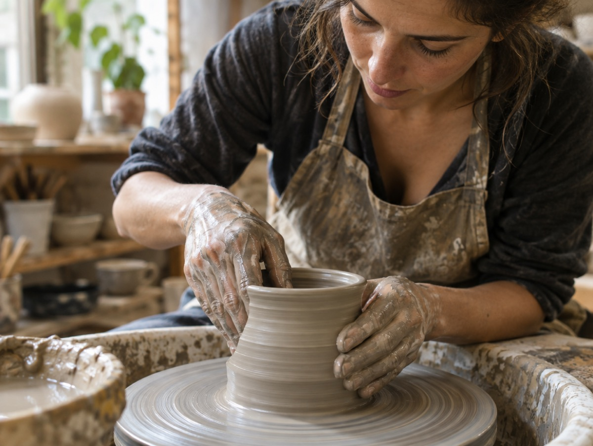
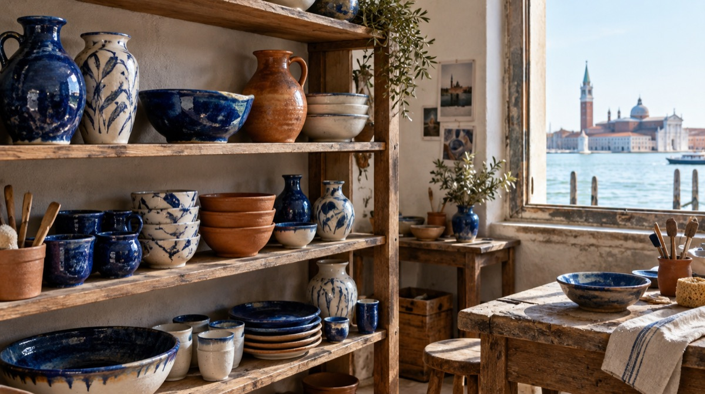
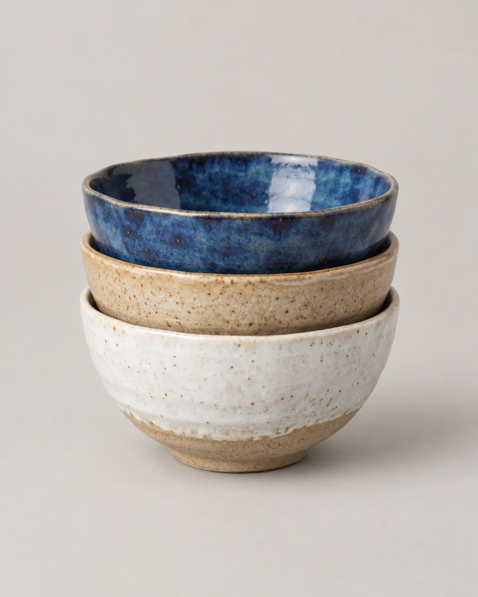
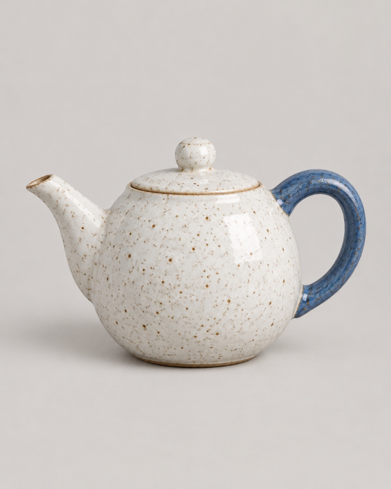

Il laboratorio
Mani, argilla e acqua di laguna
Dal 2009, a Chioggia: ogni pezzo è modellato, smaltato e cotto a mano.

Pezzi unici, davvero
Tornio, smaltatura a pennello, due cotture. Le piccole differenze sono la firma di chi le ha fatte.
- Spedizioniin 2–3 giorni in tutta Italia
- Resientro 14 giorni
- Imballaggioa prova di urto, senza plastica
- Su misuraservizi per ristoranti e liste nozze
Come nasce un pezzo
Dall'argilla alla tua tavola
Tornio
Ogni pezzo nasce dalle mani di Elena, al tornio.
Smalto
Colori stesi a pennello, uno strato alla volta.
Cottura
Due cotture, a 1000 e a 1250 gradi.
Spedizione
Imballato a mano, senza plastica.
Galleria
Il laboratorio



